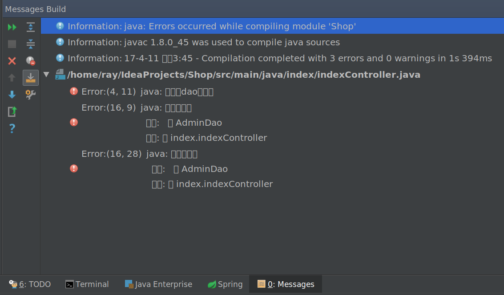
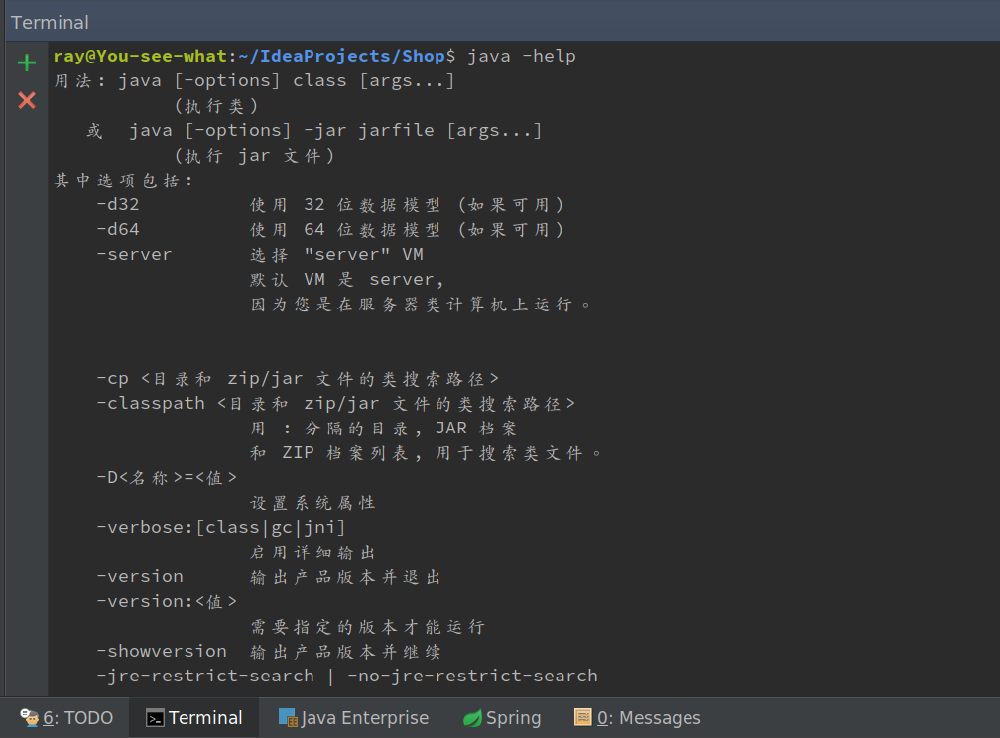
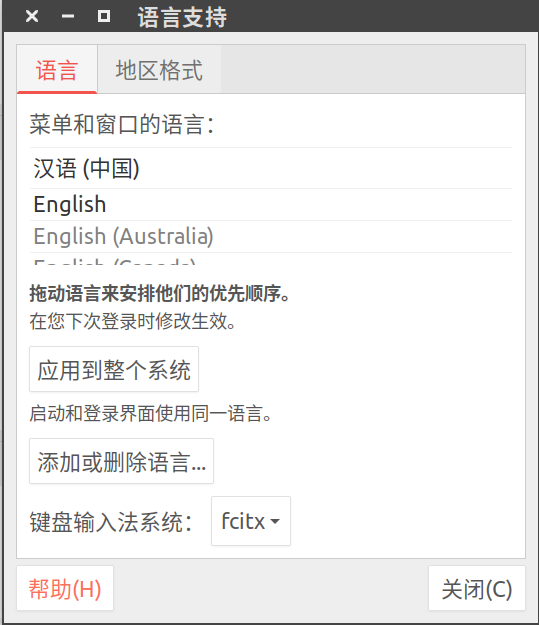
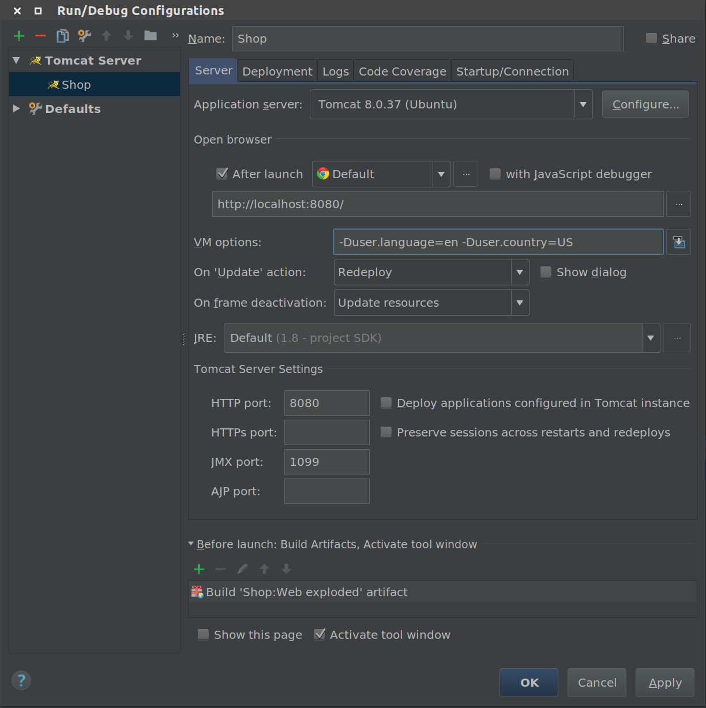
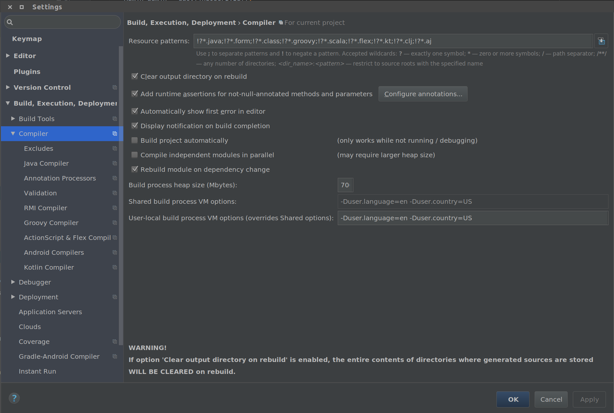
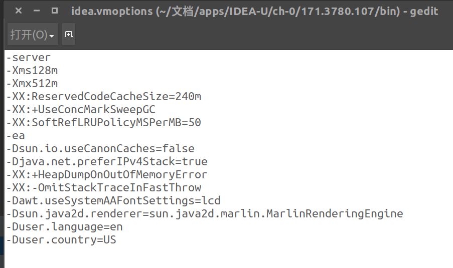
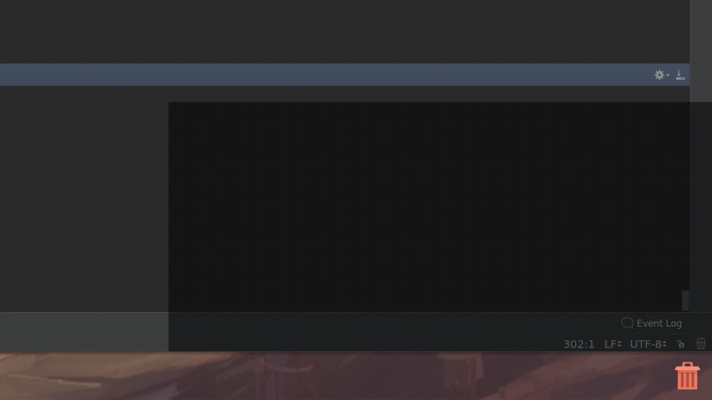

记录平时遇到的小问题和踩过的坑，当做备忘。
框架
Spring MVC表单传值中文乱码
在web.xml中增加拦截器：
1 | <filter> |
2 | <filter-name>characterEncodingFilter</filter-name> |
3 | <filter-class>org.springframework.web.filter.CharacterEncodingFilter</filter-class> |
4 | <init-param> |
5 | <param-name>encoding</param-name> |
6 | <param-value>UTF-8</param-value> |
7 | </init-param> |
8 | </filter> |
9 | <filter-mapping> |
10 | <filter-name>characterEncodingFilter</filter-name> |
11 | <url-pattern>/*</url-pattern> |
12 | </filter-mapping> |
Spring MVC返回JSON数据
只需要添加依赖：
1 | <dependency> |
2 | <groupId>com.fasterxml.jackson.core</groupId> |
3 | <artifactId>jackson-databind</artifactId> |
4 | <version>2.8.8</version> |
5 | </dependency> |
其实试了好几个解析JSON数据的包，但是就这个行了，没搞明白咋回事。
Linux系统
Docker
免sudo使用docker：
1 | $sudo addgroup --system docker |
2 | $sudo adduser $USER docker |
3 | $newgrp docker |
在容器中创建虚拟IP的时候，有可能遇到错误：
1 | IPVS: Can't initialize ipvs: Protocol not available |
开启的必要条件有两个：
- 容器放开权限，即添加参数
--privileged - 宿主机同样需要开启
ipvasdm
在容器中使用Systemctl命令经常会遇到提示：
1 | systemctl start fdfs_trckerd |
2 | Failed to get D-Bus connection: Operation not permitted |
解决办法，用特权模式启动容器：
1 | docker run -d -name centos7 --privileged=true centos:7 /usr/sbin/init |
ssh
设置免密码ssh登陆的时候，把公钥放到authorized_keys里面，重启ssh service都不生效，百度得知home目录，.ssh目录和authorized_keys文件需要分别为700,700,600权限，错一个都不行，更改权限后可以免密登陆了。
apt-get
经常遇到apt-get遇到问题卡住之后，出错的地方常年在那摆着，无论干啥都提示一遍，神烦。
1 | cd /var/lib/dpkg |
2 | sudo mv info info.bak |
3 | sudo mkdir info |
info删掉就搞定了，原理有待深入研究
数据库
Linux下的MySQL安装顺序
1 | rpm -ivh mysql-community-common-5.7.17-1.el7.x86_64.rpm |
2 | rpm -ivh mysql-community-libs-5.7.17-1.el7.x86_64.rpm |
3 | rpm -ivh mysql-community-client-5.7.17-1.el7.x86_64.rpm |
4 | rpm -ivh mysql-community-server-5.7.17-1.el7.x86_64.rpm |
5 | rpm -ivh mysql-community-devel-5.7.17-1.el7.x86_64.rpm |
安装最后一个的时候有可能出现依赖openssl的问题，重新安装openssl无效，输入参数-e --nodeps可以解决，暂不清楚原理
MySQL 8修改用户密码命令
1 | ALTER USER 'root'@'localhost' IDENTIFIED WITH mysql_native_password BY '新密码'; |
如果提示ERROR 1819 (HY000): Your password does not satisfy the current policy requirements
说明密码太简单，经过测试大小写英文字母+数字+标点符号可以满足要求。
IDEA和java
中文字符问题
运行Tomcat的时候，Messages Build出现了错误提示：

然后中文因为字体的关系不能显示，这里由于实在是喜欢这个字体，不想换成很丑的中文，而且JVM的错误提示还是英文搜索起来比较方便，所以想换成中文。然后发现在终端输入Java命令得到的是中文：

这两个应该是相关的。
然后修改系统字体：

发现可以显示成英文，但是目的是只是Java为英文，所以不想这样。
尝试过的方法：
- 在Tomcat的VM option里面添加-Duser.language=en -Duser.country=US
 - 在Setting->BUild,Execution,Deployment->Compiler中的两个地方添加-Duser.language=en -Duser.country=US
 - 在IDEA的安装路径/bin/idea.vmoptions中添加-Duser.language=en -Duser.country=US

最后发现上面那个配置文件是32位程序的，64位程序不用这个….
点击 Help->Edit Custom VM Option 会生成一个 64 位的配置文件，然后再添加-D 巴拉拉巴拉就行了….
害得我V2EX号还被封了…..
JavaFX窗口闪烁问题
用JavaFX绘制窗口的时候，由于Scene填充成了比较深的颜色，所以每次窗口初始化和大小变化的时候，背景都会出现白色闪烁：

代码如下：
1 | public class Panel extends Application { |
2 | private Group root; |
3 | private Scene scene; |
4 | private static final Color BACKGROUND_COLOR = Color.rgb(0, 0, 0, 0.5); |
5 | private Stage stage; |
6 | |
7 | |
8 | public void start(Stage primaryStage) throws Exception { |
9 | root = new Group(); |
10 | stage = primaryStage; |
11 | primaryStage.initStyle(StageStyle.TRANSPARENT); |
12 | scene = new Scene(root, 1000, 250, BACKGROUND_COLOR); |
13 | Screen screen = Screen.getScreens().get(0); |
14 | double windowHeight = screen.getBounds().getHeight(); |
15 | double windowWidth = screen.getBounds().getWidth(); |
16 | stage.setY(windowHeight + 1000); |
17 | stage.setX(windowWidth - 1000); |
18 | stage.setScene(scene); |
19 | stage.show(); |
20 | Timer timer = new Timer(); |
21 | final int[] index = {0}; |
22 | timer.schedule(new TimerTask() { |
23 | |
24 | public void run() { |
25 | System.out.println("111"); |
26 | index[0]++; |
27 | primaryStage.setY(primaryStage.getY() - 1); |
28 | primaryStage.setHeight(primaryStage.getHeight() + 1); |
29 | if (index[0] == 300) { |
30 | this.cancel(); |
31 | } |
32 | |
33 | } |
34 | }, 1000, 1); |
35 | } |
36 | } |
浪费了大概一天的时间…查找各种文档，教学，试了好多方法还是不行。
一开始以为我填充的区域不对，不是最底层的，后来以为是填充背景色时间不对，跟底层绘制时间差距太大导致出现闪烁，但是不能解决。最后还是在万能的Google上找到了一个向jdk开发人员反馈的帖子：
White flashing when opening a stage with dark background
原来是个Bug…窗口初始化的时候默认填充了白色。
第一次碰到jdk级别的Bug还有点小激动。跟着帖子看到的修复信息：
changeset 10131:bfe35c702696 jdk-9+145
解决方法是取得了子节点的颜色再填充的，修复的版本是9…所以只好下了个预览版的jdk9
最后要记住这个网站：https://bugs.openjdk.java.net，可以向jdk的开发组反馈遇到的问题～
修改Maven中央仓库
.m2文件夹下新建文件settings.xml
1 | <settings xmlns="http://maven.apache.org/SETTINGS/1.0.0" |
2 | xmlns:xsi="http://www.w3.org/2001/XMLSchema-instance" |
3 | xsi:schemaLocation="http://maven.apache.org/SETTINGS/1.0.0 |
4 | https://maven.apache.org/xsd/settings-1.0.0.xsd"> |
5 | <mirrors> |
6 | <mirror> |
7 | <id>alimaven</id> |
8 | <name>aliyun maven</name> |
9 | <url>http://maven.aliyun.com/nexus/content/groups/public/</url> |
10 | <mirrorOf>central</mirrorOf> |
11 | </mirror> |
12 | </mirrors> |
13 | </settings> |
其他设置参考官方文档
其他工具
Hexo的git问题
写完博客，上传到服务器的时候，出现了错误：
1 | FATAL Permission denied (publickey). |
2 | fatal: Could not read from remote repository. |
3 | |
4 | Please make sure you have the correct access rights |
5 | and the repository exists. |
6 | |
7 | Error: Permission denied (publickey). |
8 | fatal: Could not read from remote repository. |
9 | |
10 | Please make sure you have the correct access rights |
11 | and the repository exists. |
12 | |
13 | at ChildProcess.<anonymous> (/home/ray/文档/笔记/Blogs/node_modules/hexo-util/lib/spawn.js文档/笔记/Blogs/node_modules/hexo-util/lib/spawn.js:37:17) |
14 | at emitTwo (events.js:87:13) |
15 | at ChildProcess.emit (events.js:172:7) |
16 | at maybeClose (internal/child_process.js:821:16) |
17 | at Socket.<anonymous> (internal/child_process.js:319:11) |
18 | at emitOne (events.js:77:13) |
19 | at Socket.emit (events.js:169:7) |
20 | at Pipe._onclose (net.js:469:12) |
试了试github能登上，也能push，把hexo的配置文件里面关于git的配置，ssh改成了https,就能成功上传代码了，原因不明。每次都得输入账号密码，这也不是办法。